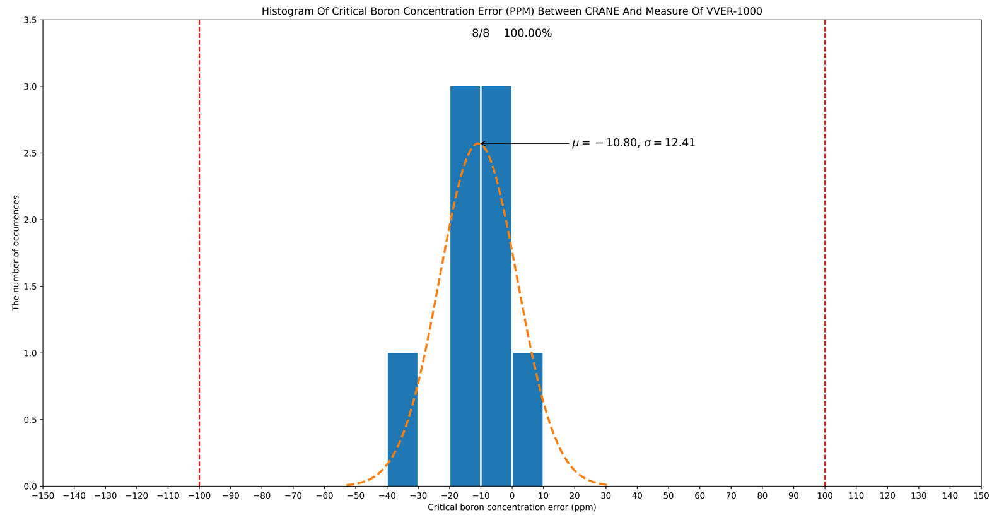
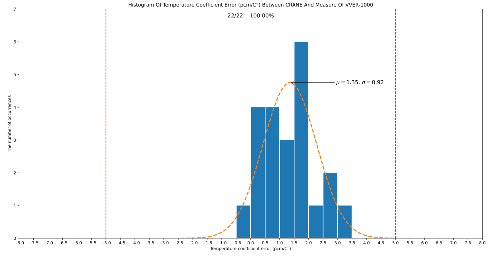
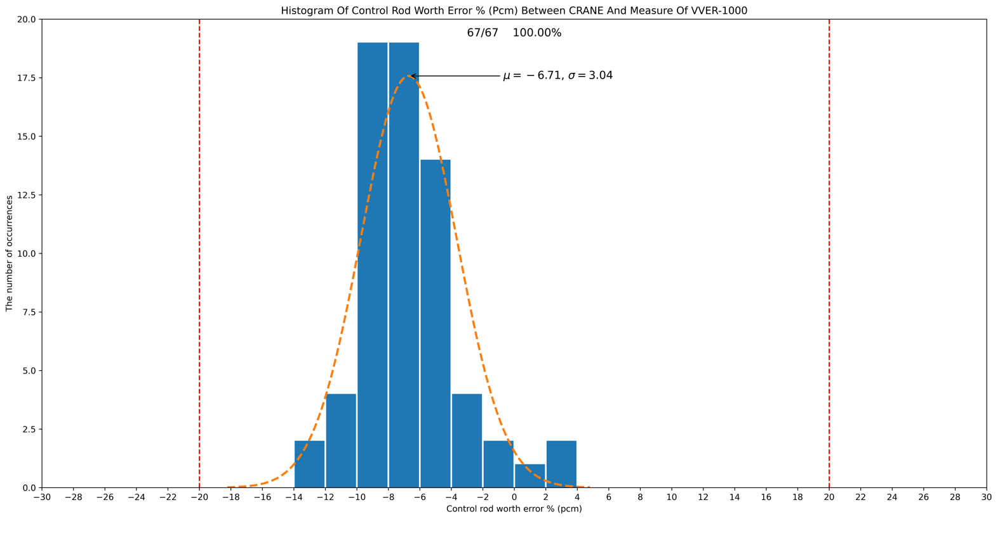
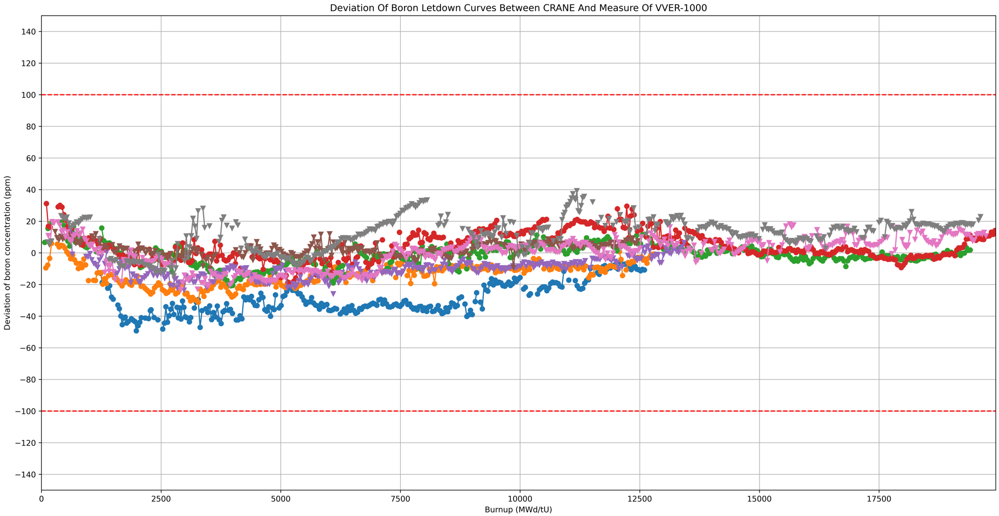
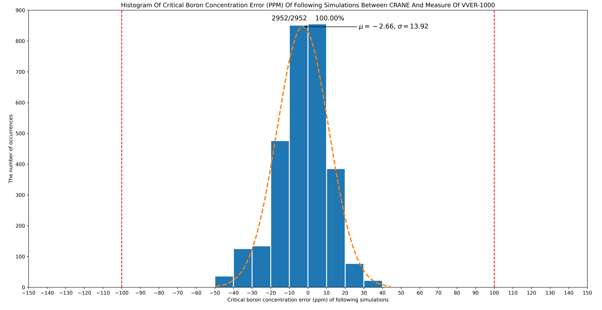
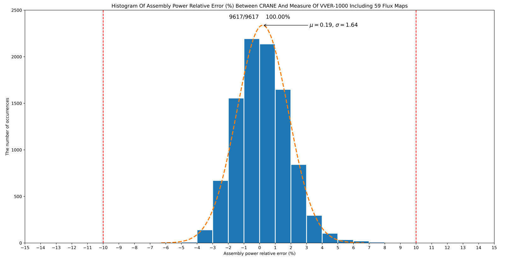

4. VVER-1000 堆型¶
CRANE针对 VVER-1000 堆型的确认数据总共包含2个机组，8个循环，10个堆年，涵盖启动物理试验的临界硼浓度、 控制棒价值、温度系数，以及功率运行跟踪一天一个点的临界硼浓度、定期通量图测量的组件功率分布。
4.1. 启动物理试验¶
4.1.1. 临界硼浓度¶
启动物理试验的临界硼浓度测量数据总共8个，都是ARO状态，CRANE计算偏差平均值-10.80ppm，均方根值12.41ppm， 工业限值±100ppm，CRANE计算值8个都在工业限值内，100%满足验收准则，偏差统计图如下：
{kind=link}

4.1.2. 温度系数¶
启动物理试验的温度系数测量数据包含ARO以及不同棒组插入情况下总共22个，CRANE计算偏差平均值1.35pcm/C°，均方根值0.92pcm/C°， 工业限值±5.0pcm/C°，CRANE计算值22个都在工业限值内，100%满足验收准则，偏差统计图如下：
{kind=link}

4.1.3. 控制棒价值¶
启动物理试验的控制棒价值测量数据包含不同棒组总共67个，CRANE计算偏差平均值-6.71%，均方根值3.04%， 工业限值±20%，CRANE计算值67个都在工业限值内，100%满足验收准则，偏差统计图如下：
{kind=link}

4.2. 运行跟踪¶
4.2.1. 临界硼浓度¶
运行跟踪的临界硼浓度测量数据是一天一个点，总计8个循环2952个点（剔除工况不稳定的点），临界硼浓度随燃耗的偏差（未考虑硼燃耗效应）图如下：
{kind=link}

针对以上运行跟踪的临界硼浓度总共2952个点，CRANE的计算偏差平均值-2.66ppcm，均方根值13.92，工业限值±100ppm， CRANE计算值2952个都在工业限值内，100%满足验收准则，偏差统计图如下：
{kind=link}

4.2.2. 组件功率分布¶
VVER-1000针对组件功率分布的验收准则是对对称位置做平均后，组件功率相对偏差不超过10%，这里我们不做对称位置平均，直接比较所有组件。 运行跟踪功率分布测量数据包含总共59张通量图，组件功率数据9617个，CRANE计算偏差平均值0.19%，均方根值1.64%， 工业限值±10%，CRANE计算值9593个在工业限值内，100%满足验收准则，偏差统计图如下：
{kind=link}

若对对称位置进行平均后再比较，偏差会减少很多，可见CRANE计算的组件功率分布精度较高，离工业限值还有较大裕量。